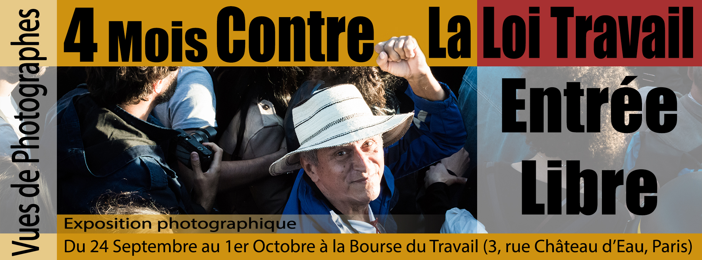
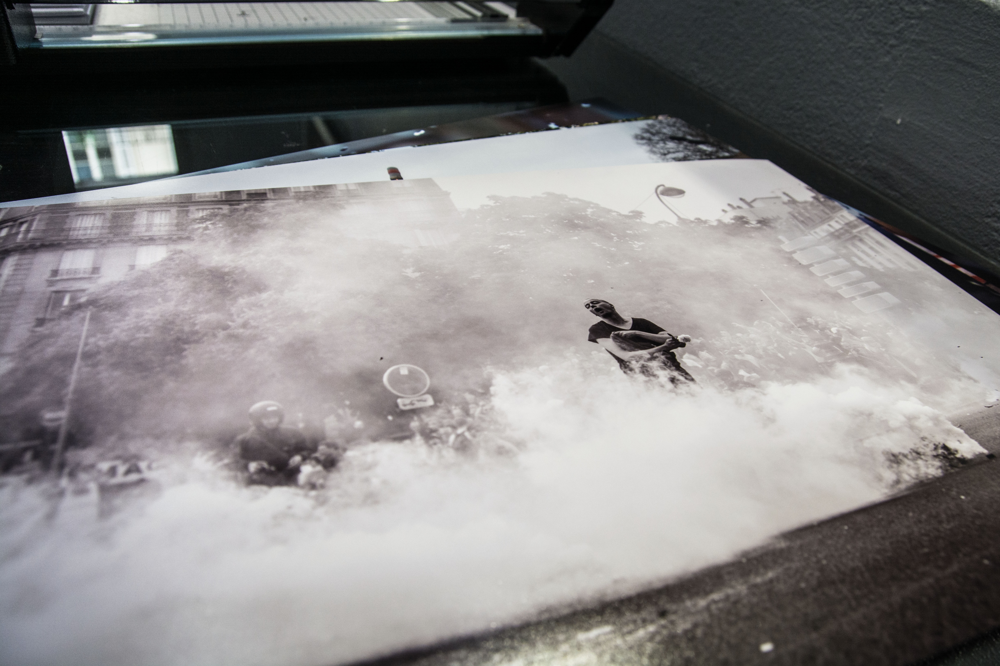
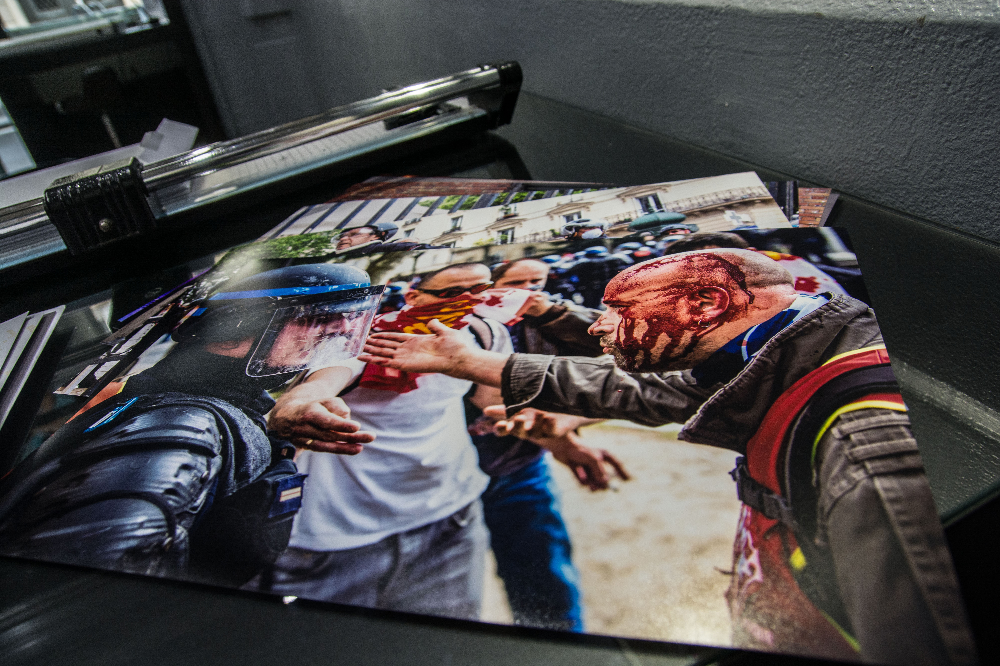
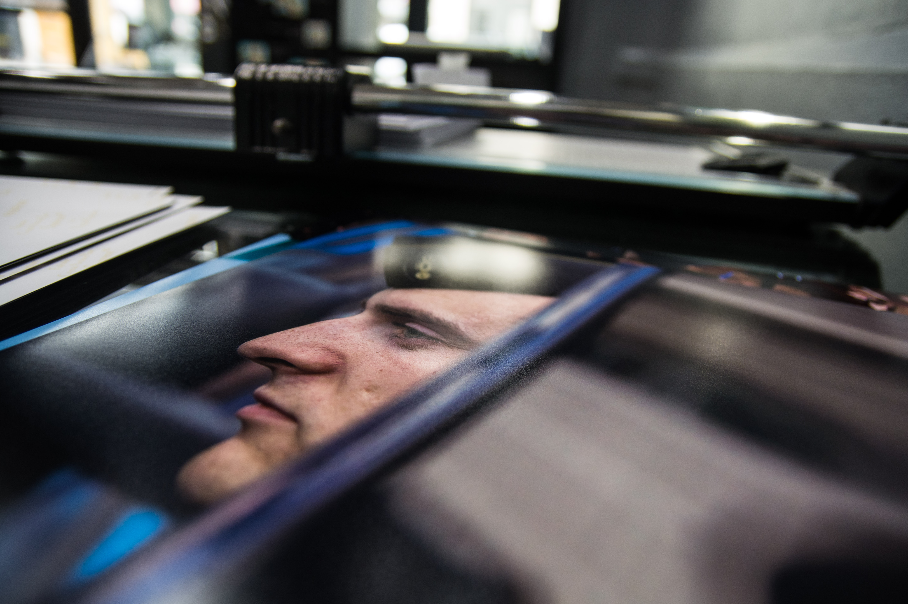

Vous pouvez retrouver toutes les informations relatives à l'exposition sur Facebook.

English version
Vues de photographes : 4 mois de lutte contre la loi travail
Nous sommes trente-et-un photographes. Trente-et-un photographes engagé.e.s. Nous sommes des photographes avec des statuts, des motivations et des niveaux d'expérience différents. Nous nous sommes rencontré dans les manifestations contre la loi « El Khomri » et nous avons eu envie de nous retrouver autour de ce projet commun. Certain.e.s d'entre nous ont photographié le mouvement depuis son commencement ; d'autres s'y sont joints comme manifestant.e.s et, par besoin d'en témoigner, l'ont fini comme photographes ; d'autres encore ont commencé en tant que photographes et ont fini par manifester aussi ; et d'autres ont suivi un chemin complètement différent. En définitive, et c'est cela qui compte, nous avons toutes et tous été nourris par ce mouvement. Trente-et-un photographes, trente-et-un chemins et surtout trente-et-un regards différents, tous portés par l'engagement. Participer à ces manifestations, c'était nécessairement en subir la répression aux cotés des autres manifestant.e.s. Combien d'entre nous ont été gazé.e.s, matraqué.e.s, interpellé.e.s, blessé.e.s, ont vu leur matériel de protection confisqué, leur matériel de travail maintes fois abîmé.
Nous avons tâché de rendre compte de ce mouvement dans son évolution et dans ses différentes formes d'action et de résistance. Beaucoup de questions se sont posées à nous en chemin : pourquoi, comment mais aussi pour qui ? Alors pour que nos photos ne restent pas sur nos ordinateurs, sur nos pages facebook ou sites internet, mais pour qu'elles reviennent aux acteurs et actrices de ce mouvement, nous avons décidé de réaliser cette première exposition collective. Pour que nos images – à nous les photographes mais aussi aux photographié.e.s - continuent à vivre mais aussi, et peut-être surtout, pour remercier les acteurs et actrices de ce mouvement qui, nous l'espérons, n'est pas terminé.
Exposition
Paris : Du 25 septembre au 1er octobre à la Bourse du travail, 3 rue du château d'eau (Métro République).
Vernissage le 24 septembre de 15h à 17h sur place.
Entrée libre.
Photographes
Alain Pitton, Alhil Villalva, Anthony Deperraz, Arnaud Gastaut, Arnaud Leclercq, Philemon Barbier, Boite Noire, Bsaz, Clemence Drack, Davide Weber, Etienne Bordet, Francis Azevedo, Guillaume Salmon, Jean Segura, Kra Ken, Lily Manapany, Loscotalos, Louis Rochette, Marion Vacca, Martin Noda, Maxime Reynié, Nicola Galvagni, Patrice Gravoin, Paul Roquecave, Pierre Gautheron, Pierre Raimbault, Rocky Mattiano, Seka, Teresa Suarez, Vincent Rispe Burret, Vitalia
Pendant ce temps...
Les préparatifs avancent et les tirages sont faits !


